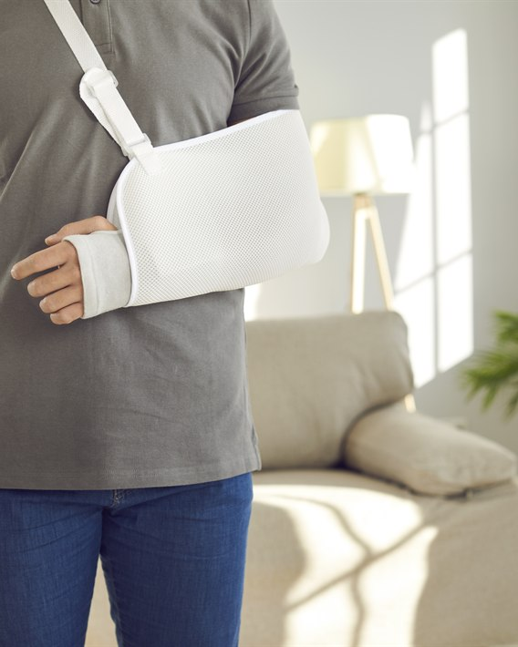
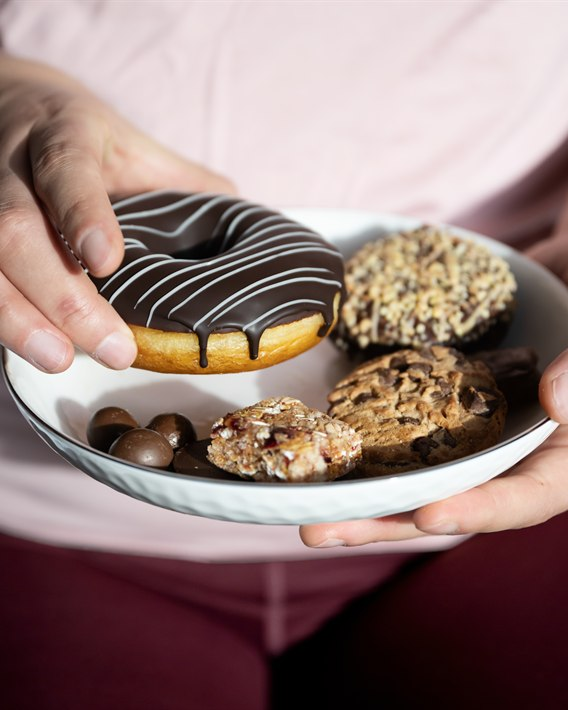

특별한 원인
없이 발생
뚜렷한 원인 없이
관절낭에 염증과 유착이
생길 수 있습니다.
오십견은 어깨 관절을 둘러싼 관절낭에 염증과 유착이 생기면서
통증과 움직임 제한이 나타나는 질환입니다.
팔을 올리거나 뒤로 돌리는 동작이 어려워지고 야간통이 동반될 수 있어
증상이 진행되기 전에 맞춤 관리가 필요합니다.
통증이 잠시 줄어들어도 어깨 관절낭의 염증과 유착이 진행되면 움직임이 제한될 수 있습니다.
팔을 올리거나 뒤로 돌리기 어렵고 밤에 통증이 심해진다면 어깨 상태를 확인해야 합니다.
뚜렷한 원인 없이
관절낭에 염증과 유착이
생길 수 있습니다.

깁스나 수술 후
움직임이 제한되면
관절이 굳을 수 있습니다.

당뇨와 갑상선 질환이
있는 경우 발병 위험이
높아질 수 있습니다.
회전근개 파열이나
석회성 건염 이후
나타날 수 있습니다.
팔을 올리거나 뒤로 돌릴 때 통증이 나타나고, 밤이 되면 통증이 심해질 수 있습니다.
어깨가 점차 굳어 움직임의 범위가 제한되는 것이 특징이며,
오십견에서 나타나는 증상일 수 있습니다.
초기에는 약물치료와 물리·운동치료를 통해 통증을 줄이고 어깨 움직임을 회복합니다.
증상이 지속되거나 통증이 심한 경우에는 상태에 따라 주사치료를 시행할 수 있습니다.

진통·소염제 등을 활용해 어깨 통증과 염증을 완화합니다.
굳어진 어깨 관절을 부드럽게 하고 운동 범위를 회복하도록 돕습니다.
증상과 관절 상태에 따라 통증을 줄이는
주사치료를 시행합니다.